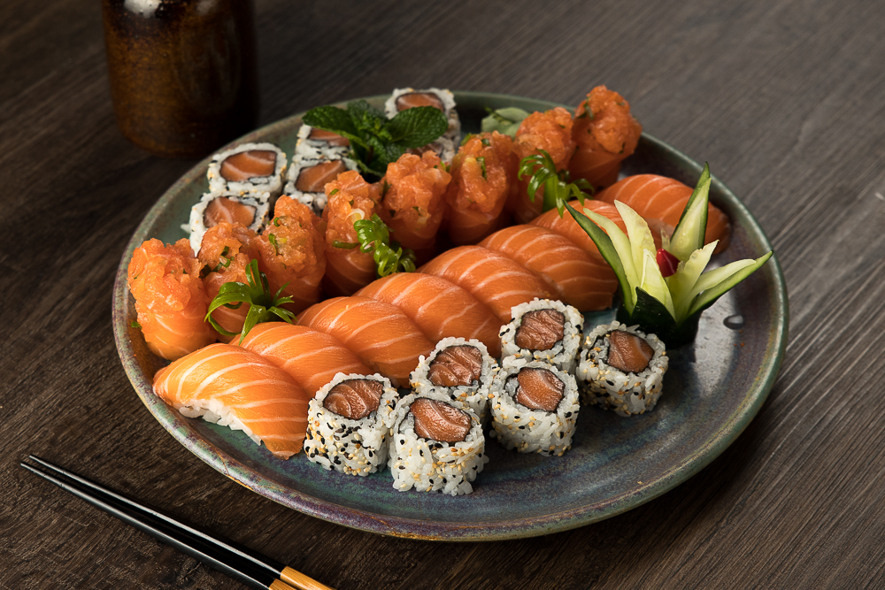

O Início de um Sonho
A história do Kyoto Sushi não começou em uma cozinha, mas em uma viagem às raízes do Japão. Encantados pela cidade de Kyoto — o berço da cultura e da elegância nipônica — nossos fundadores decidiram trazer para cá mais do que apenas receitas, mas a filosofia do Omotenashi: a arte de receber bem e antecipar os desejos do cliente. O que começou como um pequeno balcão familiar, movido pela paixão por peixes frescos e cortes precisos, tinha um objetivo claro: provar que a culinária japonesa de alta qualidade poderia ser autêntica e, ao mesmo tempo, acolhedora.

A Evolução e o Tempero Próprio
Com o passar dos anos, o Kyoto deixou de ser apenas um segredo local para se tornar uma referência. Entendemos que o sucesso da marca reside no equilíbrio. Enquanto honramos as técnicas milenares dos mestres sushimen, permitimos que a criatividade brasileira trouxesse cores e texturas contemporâneas ao nosso cardápio.
Cada peça que sai da nossa cozinha carrega essa herança: o rigor na escolha do insumo, o frescor do dia e o toque autoral que só o Kyoto possui.
Mudar texto
Com o passar dos anos, o Kyoto deixou de ser apenas um segredo local para se tornar uma referência. Entendemos que o sucesso da marca reside no equilíbrio. Enquanto honramos as técnicas milenares dos mestres sushimen, permitimos que a criatividade brasileira trouxesse cores e texturas contemporâneas ao nosso cardápio.
Cada peça que sai da nossa cozinha carrega essa herança: o rigor na escolha do insumo, o frescor do dia e o toque autoral que só o Kyoto possui.
Mudar texto 2
Com o passar dos anos, o Kyoto deixou de ser apenas um segredo local para se tornar uma referência. Entendemos que o sucesso da marca reside no equilíbrio. Enquanto honramos as técnicas milenares dos mestres sushimen, permitimos que a criatividade brasileira trouxesse cores e texturas contemporâneas ao nosso cardápio.
Cada peça que sai da nossa cozinha carrega essa herança: o rigor na escolha do insumo, o frescor do dia e o toque autoral que só o Kyoto possui.